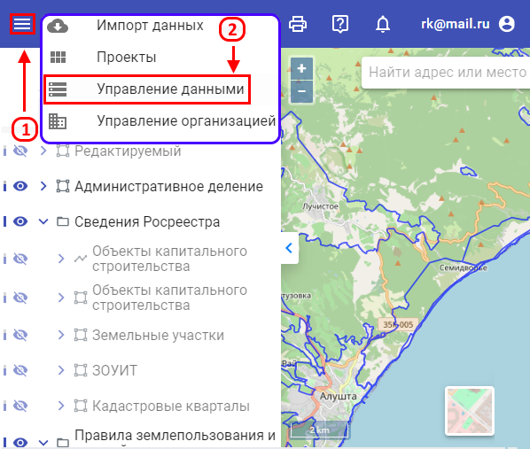

Модуль «Управление данными» предназначен для хранения, управления, предоставления и анализа данных путем
размещения их в картографических проектах.
В модуле «Управление данными» находятся:
-
Наборы данных — векторные представления документов территориального планирования и других пространственных
данных .
-
Библиотеки документов — систематизированный свод документированных сведений о градостроительной деятельности,
размещенных в разделах ГИСОГД в соответствии с нормативными актами.
-
Картографические подосновы — растровые картографические материалы, используемые в качестве подосновы для
отображения пространственных данных
Для перехода на страницу «Управление данными» требуется нажать кнопки:
- «Меню» (1)
- «Управление данными» (2)
